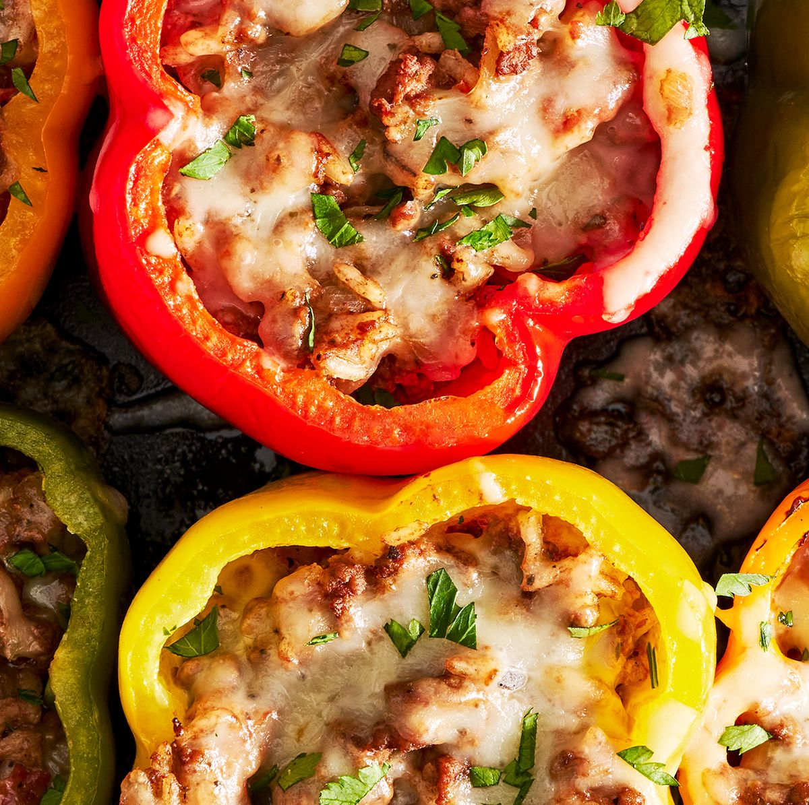

Stuffed Peppers

Trying to get a little bit on the healthier side but still want your food to look and taste appealing? or just need a new tasty and easy recepie to add to your arsenal? This recepie may be for you. Stuffed peppers can come in many variations and the recepies ingridents can be changed to suit your specific taste. This recepie uses beefy rice and monterey jack cheese but either can be swapped out for different meats and cheeses. A very tasty and veratile meal awaits!
Ingredients
- 1/2 cup of uncooked white/brown rice
- 2 tbsp. olive oil
- 1 yellow onion chopped
- 3 cloves of garlic finely chopped
- 2 tbps tomato paste
- 1 lb ground beef
- 1 (14.5oz.) can of diced tomatoes
- 1 1/2 tsp. dried oregano
- Salt
- Black pepper
- 6 Bell peppers
- 1 cup shredded monterey jack
- Chopped parsley or parsley flakes
Steps
- Preheat oven to 400 degrees
- In a saucepan cook the rice according its packages instructions
- In a skillet over medium heat add the 2 tbsp of oil and wait until its hot, then add the chopped onion stirring occasionally for 7-10 minutes until its soft
- Stir in the garlic and tomato paste and cook for about 3 minutes
- Add the ground beef and continue to cook while breaking up the meat, cooking is done when it is no longer pink, then drain excess fat
- Stir in the rice and diced tomatoes and proceed to season it with salt, pepper, and oregano then let it simmer about 5 minutes stirring occasionally until there is slightly less liquid
- Place the peppers open side up in a baking dish and drizzle them with some oil, then spoon the beef mix into each pepper and top with the monterey jack cheese and cover the dish in foil
- Bake for 30-35 minutes, uncover and continue to bake another 10 minutes until the cheese is bubbling
- Top with parsely and then serve!